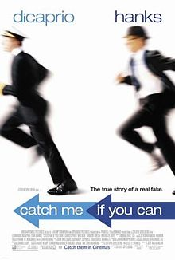
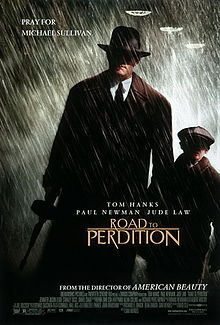
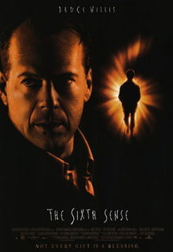

Designs and implements web projects in a cost effective way
Personal Blog|  |
Catch Me If You CanA true story about Frank Abagnale Jr., who, before his 19th birthday, successfully conned millions of dollars' worth of checks as a Pan Am pilot, doctor, and legal prosecutor. |
|  |
Road to Perditiona 2002 American crime thriller film directed by Sam Mendes. The screenplay was adapted by David Self, from the graphic novel of the same name by Max Allan Collins. |
|  |
The Sixth SenseThe film tells the story of Cole Sear, a troubled, isolated boy who is able to see and talk to the dead, and an equally troubled child psychologist (Bruce Willis) who tries to help him. |